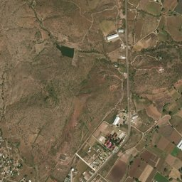
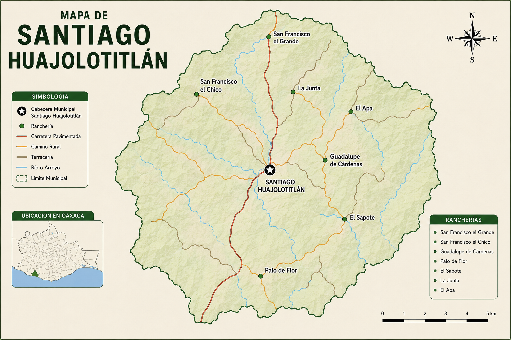

Guaxolotitlán de ayer, Huajolotitlán de hoy
"Huajolotitlán se encuentra en el corazón de la Mixteca oaxaqueña, rodeado de paisajes naturales y tradición."
Santiago Huajolotitlán se encuentra en el estado de Oaxaca, dentro de la región Mixteca. Es una comunidad rodeada de cerros y campos, lo que le da un entorno natural característico.
El pueblo se localiza en una zona donde predominan las actividades agrícolas, y su ubicación permite la conexión con otras comunidades cercanas.
El acceso principal es por carretera, facilitando el transporte y la comunicación con otras localidades.
Su entorno natural está formado por campos, cerros y vegetación, lo que influye en la vida diaria de los habitantes.
Gracias a su ubicación, el pueblo ha logrado conservar sus tradiciones y mantener su identidad cultural.

